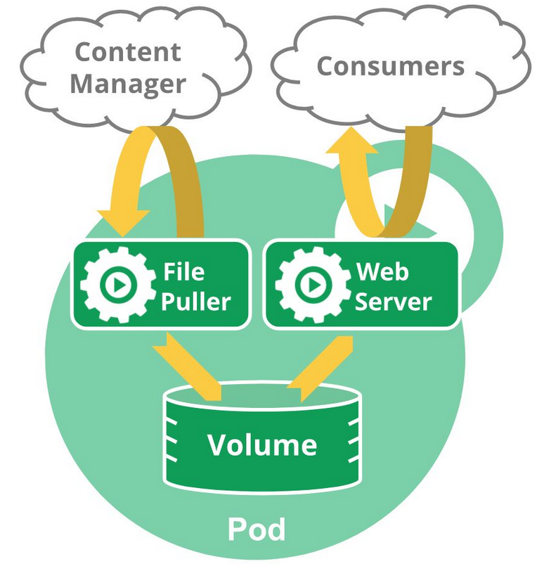

第1篇Kubernetes介绍
一、Kubernetes 介绍：
kubernetes起源
Kubernetes (K8s) 是 Google 在 2014 年发布的一个开源项目。
据说 Google 的数据中心里运行着超过 20 亿个容器，而且 Google 十年前就开始使用容器技术。最初，Google 开发了一个叫 Borg 的系统（现在命令为 Omega）来调度如此庞大数量的容器和工作负载。在积累了这么多年的经验后，Google 决定重写这个容器管理系统，并将其贡献到开源社区，让全世界都能受益。
这个项目就是 Kubernetes。简单的讲，Kubernetes 是 Google Omega 的开源版本。
从 2014 年第一个版本发布以来，Kubernetes 迅速获得开源社区的追捧，包括 Red Hat、VMware、Canonical 在内的很多有影响力的公司加入到开发和推广的阵营。目前 Kubernetes 已经成为发展最快、市场占有率最高的容器编排引擎产品。 Kubernetes 一直在快速地开发和迭代。
Kubernetes 的几个重要概念
在实践之前，必须先学习 Kubernetes 的几个重要概念，它们是组成 Kubernetes 集群的基石。
Cluster
Cluster 是计算、存储和网络资源的集合，Kubernetes 利用这些资源运行各种基于容器的应用。
Master
Master 是 Cluster 的大脑，它的主要职责是调度，即决定将应用放在哪里运行。Master 运行 Linux 操作系统，可以是物理机或者虚拟机。为了实现高可用，可以运行多个 Master。
Node
Node 的职责是运行容器应用。Node 由 Master 管理，Node 负责监控并汇报容器的状态，并根据 Master 的要求管理容器的生命周期。Node 运行在 Linux 操作系统，可以是物理机或者是虚拟机。
Pod
Pod 是 Kubernetes 的最小工作单元。每个 Pod 包含一个或多个容器。Pod 中的容器会作为一个整体被 Master 调度到一个 Node 上运行。
Kubernetes 引入 Pod 主要基于下面两个目的：
- 可管理性。有些容器天生就是需要紧密联系，一起工作。Pod 提供了比容器更高层次的抽象，将它们封装到一个部署单元中。Kubernetes 以 Pod 为最小单位进行调度、扩展、共享资源、管理生命周期。
- 通信和资源共享。Pod 中的所有容器使用同一个网络 namespace，即相同的 IP 地址和 Port 空间。它们可以直接用 localhost 通信。同样的，这些容器可以共享存储，当 Kubernetes 挂载 volume 到 Pod，本质上是将 volume 挂载到 Pod 中的每一个容器。
Pods 有两种使用方式：
- 运行单一容器。
one-container-per-Pod是 Kubernetes 最常见的模型，这种情况下，只是将单个容器简单封装成 Pod。即便是只有一个容器，Kubernetes 管理的也是 Pod 而不是直接管理容器。 - 运行多个容器。但问题在于：哪些容器应该放到一个 Pod 中？答案是：这些容器联系必须 非常紧密，而且需要 直接共享资源。
举个例子。
下面这个 Pod 包含两个容器：一个 File Puller，一个是 Web Server。

File Puller 会定期从外部的 Content Manager 中拉取最新的文件，将其存放在共享的 volume 中。Web Server 从 volume 读取文件，响应 Consumer 的请求。
这两个容器是紧密协作的，它们一起为 Consumer 提供最新的数据；同时它们也通过 volume 共享数据。所以放到一个 Pod 是合适的。
再来看一个反例：是否需要将 Tomcat 和 MySQL 放到一个 Pod 中？
Tomcat 从 MySQL 读取数据，它们之间需要协作，但还不至于需要放到一个 Pod 中一起部署，一起启动，一起停止。同时它们是之间通过 JDBC 交换数据，并不是直接共享存储，所以放到各自的 Pod 中更合适。
Controller
Kubernetes 通常不会直接创建 Pod，而是通过 Controller 来管理 Pod 的。Controller 中定义了 Pod 的部署特性，比如有几个副本，在什么样的 Node 上运行等。为了满足不同的业务场景，Kubernetes 提供了多种 Controller，包括 Deployment、ReplicaSet、DaemonSet、StatefuleSet、Job 等，我们逐一讨论。
Deployment 是最常用的 Controller，比如前面在线教程中就是通过创建 Deployment 来部署应用的。Deployment 可以管理 Pod 的多个副本，并确保 Pod 按照期望的状态运行。
ReplicaSet 实现了 Pod 的多副本管理。使用 Deployment 时会自动创建 ReplicaSet，也就是说 Deployment 是通过 ReplicaSet 来管理 Pod 的多个副本，我们通常不需要直接使用 ReplicaSet。
DaemonSet 用于每个 Node 最多只运行一个 Pod 副本的场景。正如其名称所揭示的，DaemonSet 通常用于运行 daemon。
StatefuleSet 能够保证 Pod 的每个副本在整个生命周期中名称是不变的。而其他 Controller 不提供这个功能，当某个 Pod 发生故障需要删除并重新启动时，Pod 的名称会发生变化。同时 StatefuleSet 会保证副本按照固定的顺序启动、更新或者删除。
Job 用于运行结束就删除的应用。而其他 Controller 中的 Pod 通常是长期持续运行。
Service
Deployment 可以部署多个副本，每个 Pod 都有自己的 IP，外界如何访问这些副本呢？
通过 Pod 的 IP 吗？
要知道 Pod 很可能会被频繁地销毁和重启，它们的 IP 会发生变化，用 IP 来访问不太现实。
答案是 Service。
Kubernetes Service 定义了外界访问一组特定 Pod 的方式。Service 有自己的 IP 和端口，Service 为 Pod 提供了负载均衡。
Kubernetes 运行容器（Pod）与访问容器（Pod）这两项任务分别由 Controller 和 Service 执行。
Namespace
如果有多个用户或项目组使用同一个 Kubernetes Cluster，如何将他们创建的 Controller、Pod 等资源分开呢？
答案就是 Namespace。
Namespace 可以将一个物理的 Cluster 逻辑上划分成多个虚拟 Cluster，每个 Cluster 就是一个 Namespace。不同 Namespace 里的资源是完全隔离的。
Kubernetes 默认创建了三个 Namespace。

default -- 创建资源时如果不指定，将被放到这个 Namespace 中。kube-system -- Kubernetes 自己创建的系统资源将放到这个 Namespace 中。kube-public -- Kubernetes 公共的系统资源将放到这个 Namespace 中。
熟悉了 k8s 的这些重要概念，下节开始，我们将搭建自己的 Kubernetes 集群。